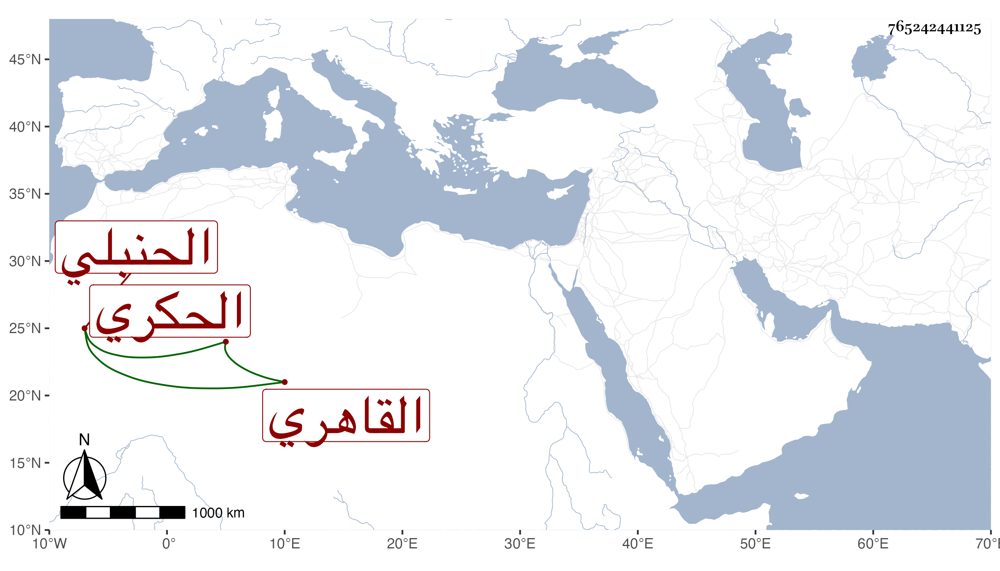

0902Sakhawi.DawLamic.ITO20230111-ara1.EIS1600.765242441125
Biography ID: 765242441125
452
محمد بن علي بن خليل بن علي بن أحمد بن عبد الله بن محمد البدر بن النور الحكري القاهري الحنبلي الماضي أبوه . ذكره شيخنا في إنبائه فقال نشأ نشأة حسنة واشتغل كثيرا وبحث المقنع والمستوعب على القاضي الحنبلي وتميز وكتب بخطه كثيرا ، وناب في الحكم مدة وكان جميل الصورة حسن المعاشرة متواضعا . مات في أول ربيع الأول سنة سبع وثلاثين عن ثلاث وخمسين سنة طلعت له جمرة في قفاه فمات بها . قلت وقد سمع الحديث ورأيت بخطه بعض الأثبات للعز الكناني وغيره وكذا رأيت بخطه أصول ابن مفلح فرعها في سنة اثنتين وثلاثين وكان يجلس بمجلس الحلوانيين .
